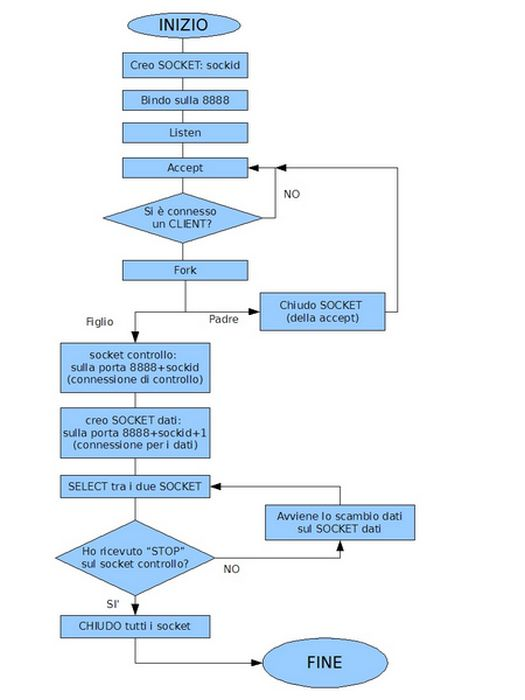

Torna alla pagina di Sistemi per l'elaborazione delle informazioni
:: Temi d'esame di Sistemi - 12/05/2007 ::
Esercizio 1
Siete stati incaricati di scrivere usando i socket un server a cui possono collegarsi dei citofoni. I citofoni sono collegati al server tramite Ethernet 10Mbps. Il programma server riceve sulla porta 8888 richieste di connessione dai citofoni. Ogni citofono apre due connessioni: una di controllo e l'altra su cui passano i pacchetti dati contenenti la voce campionata. Il server conclude la connessione che trasporta la conversazione quando riceve sulla connessione di controllo un pacchetto contenente la stringa STOP.
Fornite lo schema e lo pseudocodice delle principali chiamate socket necessarie per il corretto funzionamento del programma. Gestite correttamente il problema della possibile simultaneità delle richieste di connessione.
SOLUZIONE
SCHEMA A BLOCCHI:

PSEUDO-CODICE:
sockid=socket(AF_INET, sock_stream, 0);
//controllo che sia ok
if(sockid!=0) {
msg "error";
exit(-1)
}
//per comodità assegno tutto
sockaddr_in destinazione {
destinazione.sin_family = AF_INET;
destinazione.sin_port = 8888;
destinazione.sin_addr = localaddress;
}
int status = bind (sockid, &destinazione, lenght(destinazione));
//controllo
if(status!=0) {
msg "error";
exit(-1)
}
//metto in ascolto e gli metto il massimo di citofoni in coda
int startlen = listen (sockid, 10);
//controllo
if(startlen!=0) {
msg "error";
exit(-1)
}
//ciclo infinito per continuare l'accept
for (;;){
int sockaddr, clientaddr;
int clientid = accept (sockid, clientaddr, lenght(clientaddr));
pid = fork();
//controllo se è il processo padre o il processo figlio
if (pid!=0){
close(clientid);
}
//scrivo il figlio
else{
//crea un nuovo socket per i dati ad una porta più o meno casuale
datasocket = socket(PF_INET, sock_stream, o);
sockaddr_in dataaddr{
dataaddr.sin_family = AF_INET;
dataaddr.sin_port = 8888 + datasocket;
dataaddr.sin_addr = localaddress;
}
bind (datasocket, &dataaddr, sizeof(dataaddr));
int array_socket = new array_socket[2];//creo un array di 3 celle
array_socket[0] = clientid;
array_socket[1] = datasocket;
boolean fine = false //per il ciclo di ricevimento dei dati
//finchè non mi dà stop, continuo il ciclo
while (!fine) {
int chi = select (2, &array_socket, NULL, NULL, NULL);
if (chi = clientid){
string comando;
recv (clientid, &comando, len(comando), NULL);
if (comando=="stop"){
fine = "true";
}
else {
//analizza i dati in ingresso
}
}
close(clientid);
close(datasocket);
} //fine del figlio
}
close(socketid);
//fine programma
}
Versione alternativa in PDF
Esercizio 2
Con riferimento alla figura che segue, che rappresenta un'esecuzione del comando nslookup:
Specificare i record che sono SICURAMENTE presenti nel database del server DNS che risponde, mettendo in evidenza i tipi di record (RR, MX, SOA e NS).
SOLUZIONE
Innanzitutto, RR sta per Resource Record, e vuol dire "record di risorsa". E' il nome che si dà a tutti i record DNS, e NON è il nome di un record. La fonte è autorevole: http://www.iana.org/assignments/dns-parameters.
MX = è il record Mail eXchange, che mi dice il server di posta adatto al dominio. Eg, devo postare a dario@babaoglu.com, e mi viene detto che il server di posta di babaoglu.com è baba.oglu.pandino.
SOA = Start Of Authority, mi dice qual'è il DNS autoritativo per quel dominio. Nell'esempio qui sopra, non saprei qual'è, devo capirlo.
NS = Name Server, e serve per mappare un dominio ad una lista di DNS server autoritativi per quel dominio.
Nell'immagine qui sopra, le prime 2 righe mi dicono il nome e l'indirizzo del server a cui è stata rivolta la query DNS. Le altre 3 righe mi dicono il nome di pc-darwish in rete, il suo indirizzo e l'indirizzo di alias. Non viene indicato se la risposta è autoritativa o meno.
Quindi compaiono l'A record (indirizzo), il CNAME (alias) e il PTR (IP) di pc-darwish. MX qui non compare, né SOA né NS... ma tanto nessuno ci contava, no?:) Poi magari mi sbaglio, neh! Ma chiedete a lui, non vorrei dirvi una cazzat...
Esercizio 3
L'accesso ad un sito restituisce il seguente header:
HTTP/1.1 200 OK
Content-Lenght: 83492
Content-Type: text/html
Content-Location: http://olaf.crema.unimi.it:80/Default.htm
Last-Modified: Tue, 10 Jan 2007 16:37:51 GMT
Accept-Ranges: bytes
ETag: "b327d632416c61:242"
Server: Microsoft-IIS/6.0
X-Powered-By: ASP.NET
Date: Sun, 29 Jan 2006 16:30:54 GMT
Connection: close
- Fornite la richiesta HTTP che più probabilmente ha causato la risposta
- Spiegate il significato di almeno cinque campi dello header ricevuto
SOLUZIONE
1. richiesta http:
GET /Default.htm HTTP/1.1
Host: olaf.crema.unimi.it
User-Agent: Mozilla/5.0
Accept: text/xml,application/xml,application/xhtml+xml,text/html;q=0.9,text/plain;q=0.8,image/png,*/*;q=0.5
Accept-Encoding: gzip,deflate
Accept-Charset: ISO-8859-1,utf-8;q=0.7,*;q=0.7
Connection: Close
If-Modified-Since: Tue, 10 Jan 2007 16:37:51 GMT
NOTA: per vedere i campi http utilizzate o il sito che ha consigliato il Damiani nazionale http://www.softswot.com/http-header.php#viewer oppure se usate Firefox potete installare il plugin Live http Headers su questo sito http://livehttpheaders.mozdev.org/
In teoria i campi GET \ HOST \ CONNECTION dovrebbero essere sufficienti perché sono quelli fondamentali, gli altri campi dipendono dal browser utilizzato e dalle opzioni, io li ho inseriti osservando il Live HTTP Headers quindi sono giusti, però sono forse superflui per l'esercizio.
2. campi risposta:
http/1.1: indica il protocollo e la sua versione.
200 OK: significa che la richiesta è andata a buon fine e l’oggetto richiesto è incluso nella risposta.
NOTA: il numero è lo status code, mentre ok è lo status message, rappresentano la stessa informazione, ma una sotto forma di numero, l’altra sotto forma di messaggio.
Content-Length: dimensioni in bytes della risposta.
Content-Type: tipo dell’oggetto contenuto nell’Entity Body, nel corpo della risposta.
Content-Location: Questo campo viene usato per indicare la locazione dell’entità associata alla risorsa definita dal Request-URI. Viene usata quando una o più entità associate alla risorsa hanno locazioni diverse da essa.
Last-Modified: data dell’ultima modifica dell’oggetto richiesto.
Accept-Ranges: specifica quale tipo di contenuto questo server supporta.
ETag: identificativo della pagina, se la pagina cambia, cambia anche questo valore.
Server: tipo di Web Server.
X-Powered-By:
Date:data di creazione della risposta.
Connection: close indica una connessione non persistente.
Domande:
- Il protocollo RPC si basa su UDP o TCP? Quali sono le possibili motivazioni della scelta?
- Spiegare cosa è il protocollo CHAP e quando si usa
- Spiegare cosa è il formato MIME ed elencare almeno due protocolli applicativi che ne fanno uso
SOLUZIONE
1.
UDP conviene se:
*multiple esecuzioni della procedura non sono dannose
- argomenti e risultato hanno dimensione minore del pacchetto UDP
- il server deve gestire molti client ( UDP non mantiene informazioni sul client)
TCP conviene se:
*l’applicazione richiede una connessione affidabile
- le procedure non possono essere eseguite più volte
- le dimensioni degli argomenti o del risultato eccedono 8kb
Comunque il Ceravolino aveva detto che è meglio UDP.
2.
In informatica il CHAP (Challenge-Handshake Authentication Protocol) è un protocollo di autenticazione che identifica un utente presso un Internet Service Provider.
Il CHAP è uno schema d'autenticazione usato dai server PPP per convalidare l'identità dei client remoti. Il CHAP verifica periodicamente l'identità del client tramite un processo handshake. Ciò accade non appena viene stabilito il primo contatto e può accadere di nuovo in qualunque momento. La verifica si basa su un segreto condiviso (come la password dell'utente).
- Dopo aver stabilito una connessione, il client invia il proprio identificativo utente ed il server risponde con una domanda di "sfida" (challenge), costituita da un numero semicasuale.
- Il client esegue l'hash (può essere un MD5) del challenge assieme alla sua password e lo reinvia.
- Il server, che conosce la password, è in grado di eseguire lo stesso calcolo e quindi comparare i due valori verificando la correttezza del valore ricevuto. Se i valori non combaciano la connessione viene terminata.
- Ad intervalli casuali il server ripropone un challenge al client e vengono ripetuti i primi tre passi.
(da Wikipedia)
3.
Le MIME ( Multipurpose Internet Mail Extensions ) sono state definite per consentire la trasmissione di dati non ASCII attraverso la posta elettronica. MIME consente che dati arbitrati siano codificati in ASCII e poi trasmessi in un messaggio standard di posta elettronica.
Ogni messaggio MIME include informazioni che comunicano al destinatario il tipo dei dati e la codifica usata. Lo standard definisce sette tipi base del contenuto. Questi tipi si trovano nel campo Content-Type visto anche negli esercizi http.
SMTP / POP3 / HTTP / ...
(Dal libro).
Torna alla pagina di Sistemi per l'elaborazione delle informazioni